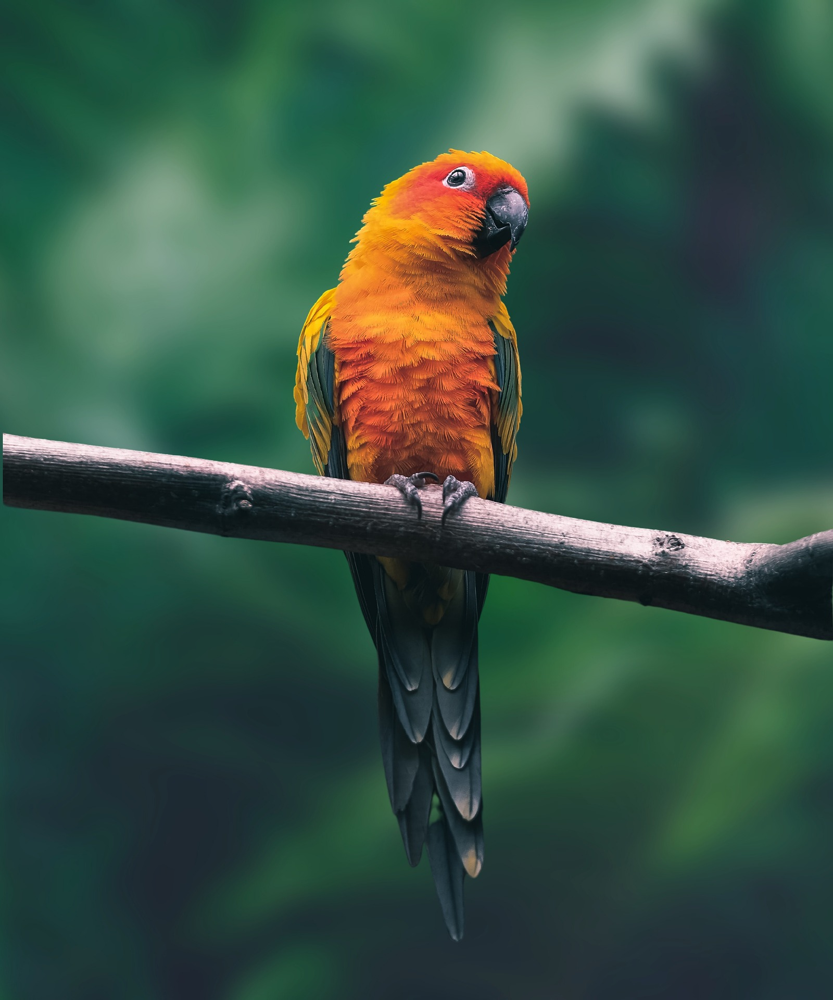

Conure toolkit
Welcome to the Conure toolkit home screen.
Explore the various sections to learn more about conure care, nutrition, health, training, breeding, enrichment, housing, and resources.
Information
Conures are small to medium-sized parrots known for their playful personalities and vibrant plumage. They are native to Central and South America and are popular pets due to their affectionate nature and intelligence.
Conures require a balanced diet, regular social interaction, mental stimulation, and proper housing to thrive in captivity. Understanding their needs is essential for providing a happy and healthy environment for these delightful birds.
Conuers-Scientific Classification

Kingdom: Animalia
Phylum: Chordata
Class: Aves
Order: Psittaciformes
Family: Psittacidae
Subfamily: Arinae
Genus: Aratinga, Pyrrhura, Eupsittula, Psittacara, and others